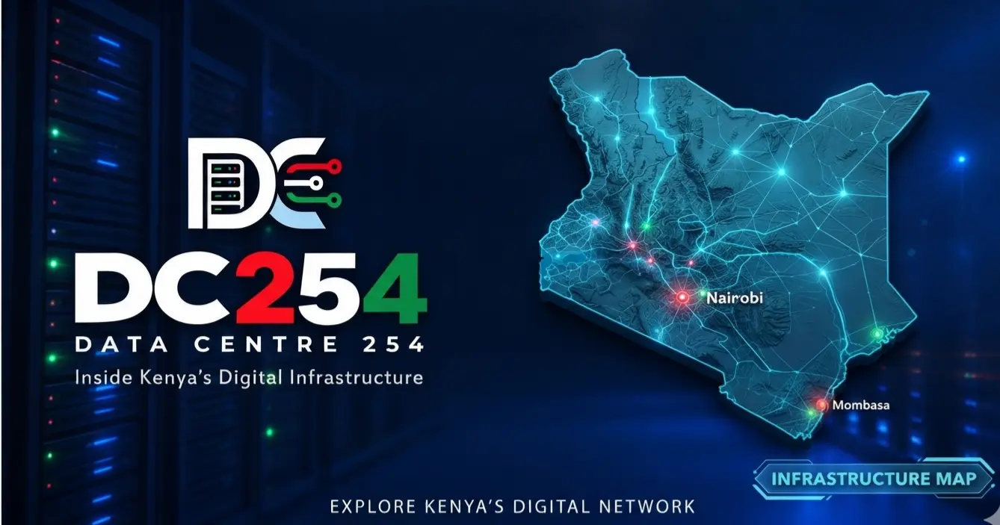

A gateway is not a cluster. A cluster is not a gateway.
Mombasa brings the routes. A cable landing does not automatically make a city a data-centre cluster.
Nairobi concentrates the compute. A data-centre cluster does not automatically provide international route diversity.
Kenya needs both: Mombasa for international connectivity, Nairobi for concentration, interconnection and enterprise demand. Neither role substitutes for the other.
DC254OPEN DATA CENTRE INTELLIGENCE · KENYA04 / 07
The infrastructure chain
From the coast to the customer
01
Subsea cablesinternational routes
02
Mombasa landing stationsthe gateway
03
Terrestrial fibrethe corridor
04
Nairobi data centresthe cluster
05
IXPs and connected networksKIXP · 144 members
06
Businesses, cloud services and usersdemand
DC254OPEN DATA CENTRE INTELLIGENCE · KENYA05 / 07
The strategic question
How effectively can Kenya connect the gateway to the cluster?
01 Coastal cable capacity
02 Terrestrial fibre
03 Nairobi facilities
04 IXPs
05 Regional markets
The opportunity is the connection between the two.
DC254OPEN DATA CENTRE INTELLIGENCE · KENYA06 / 07
Explore the infrastructure
See both cities on the DC254 map
Nairobi · the cluster
19 tracked DCs
13 operational, every pipeline project in the metro, KIXP peering
Mombasa · the gateway
7 live cables
4 / 4 data centres operational, landing stations to three continents

Open the infrastructure map
data-centers-254.vercel.app/infrastructure/map
Figures: DC254 directory and cable tracker, verified 6 October 2026.